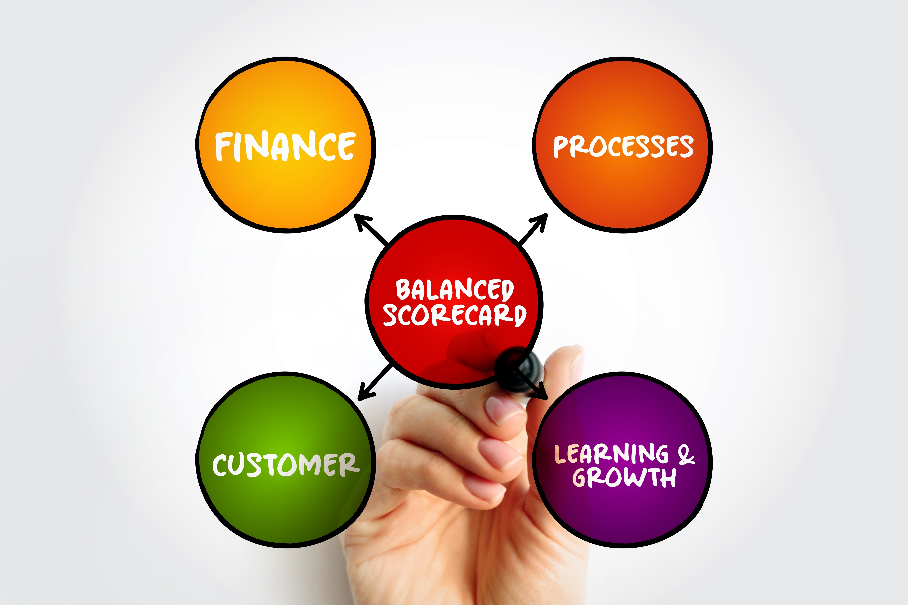

Cuadro de mando integral

El Cuadro de mando integral, que en inglés, se conoce como Balanced Scorecard (BSC), constituye una herramienta fundamental de planificación y gestión estratégica, al permitir la articulación coherente entre los objetivos institucionales, los indicadores de desempeño, las metas y las iniciativas clave. Según Kaplan y Norton (citados por Malgioglio et al., 2002, en Barazarte, 2018), el BSC “es la representación en una estructura coherente de la estrategia del negocio a través de objetivos claramente encadenados entre sí”, lo cual facilita la alineación de toda la organización con una visión estratégica común. Además, este enfoque permite que los propios equipos participen activamente en el diseño de estrategias y planes, promoviendo un proceso de mejora sostenible basado en decisiones informadas, en contraste con enfoques improvisados o desarticulados.
¿Para qué sirve?
El BSC permite:
- Alinear a toda la organización con una visión y estrategia comunes.
- Identificar las prioridades institucionales con base en datos y metas medibles.
- Monitorear el avance estratégico mediante indicadores clave.
- Promover una gestión más proactiva, orientada a resultados y sostenibilidad.
- Evitar decisiones aisladas, reactivas o desarticuladas.
¿En qué momento se utiliza?
- Etapas iniciales de diagnóstico estratégico del PDM.
- Procesos de alineamiento institucional y formulación de objetivos estratégicos.
- Revisión y actualización del sistema de indicadores institucionales.
- Evaluación de resultados y rediseño de estrategias en planes plurianuales.
Inténtelo
- Defina la visión y los ejes estratégicos del PDM.
- Identifique los objetivos estratégicos en las cuatro perspectivas del BSC.
- Asigne indicadores de resultado y de gestión para cada objetivo.
- Establezca metas claras y plazos por indicador.
- Diseñe iniciativas clave para alcanzar los objetivos estratégicos
- Monitoree, evalúe y ajuste según resultados y contexto
Ejemplo práctico aplicado a una municipalidad
A continuación, se presenta un ejemplo recreado para la municipalidad de Arado en el área de desarrollo institucional.
Tema
Mejora de la atención ciudadana, sostenibilidad financiera, política social y desarrollo urbano
| Perspectiva BSC | Objetivo estratégico | Indicador clave | Meta 2025 | Iniciativa prioritaria |
|---|---|---|---|---|
| Financiera | Incrementar la recaudación tributaria sostenible. | % de incremento en la recaudación efectiva. | +15 % respecto al 2024. | Campaña de educación tributaria y uso de plataformas digitales. |
| Ciudadanía / Usuarios | Mejorar la percepción ciudadana sobre los servicios municipales. | Índice de satisfacción usuaria. | ≥80 % de satisfacción. | Rediseño del proceso de atención y ventanilla única virtual. |
| Procesos internos | Agilizar trámites urbanísticos y licencias comerciales. | Tiempo promedio de resolución (días). | <10 días hábiles. | Automatización de procesos y capacitación en simplificación de trámites. |
| Aprendizaje / Innovación | Fortalecer capacidades del personal técnico y operativo. | % de personal capacitado en gestión de calidad. | 90 % al final del período. | Programa de formación continua y certificaciones. |
Referencia
Estas son algunas fuentes para investigar más acerca de esta herramienta:
Bazararte, R. (2018). El Cuadro de Mando Integral como modelo de planificación y gestión. Revista Equidad, 1, 69–74.